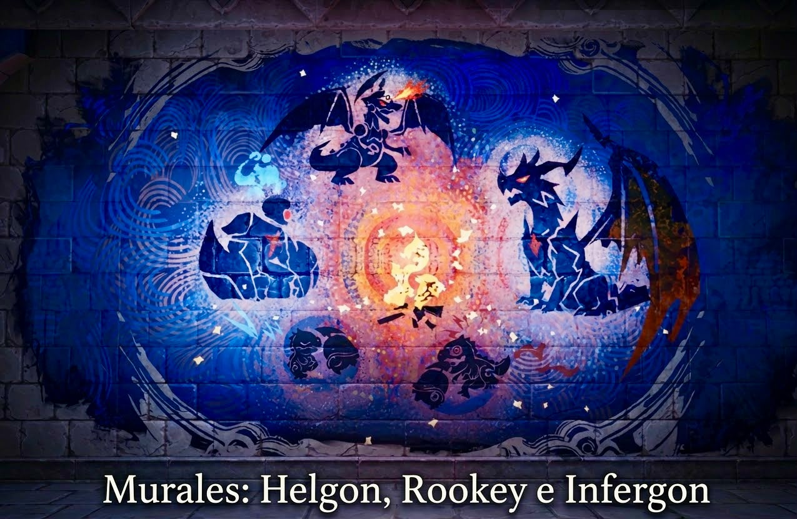
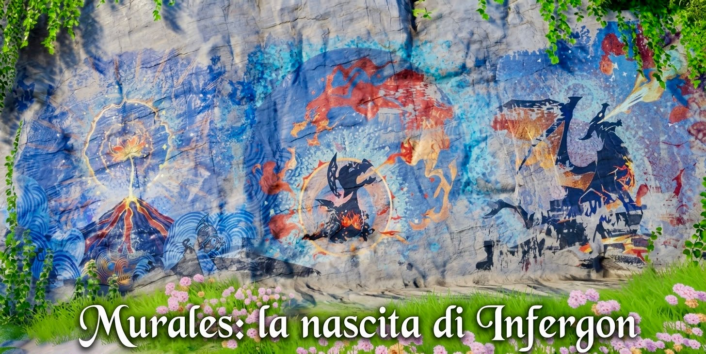

Le leggende di Idyll non vivono solo nei racconti: sono dipinte. La schermata World del gioco conserva murali e immagini d'archivio con didascalie proprie. Nella Grotta di Helgon un murale mostra Helgon, Rookey e Infergon seduti in cerchio a chiacchierare di notte; vicino dormono un Helmut e un Jawling, mentre un altro Jawling ha i denti piantati nell'elmo di un Helmut, e un registratore con scrittura antica lascia pensare che tanto tempo fa le famiglie Helmut e Jawling fossero legate da un'amicizia serena.
Un altro racconto spiega come nacque Infergon: negli Altipiani Russet (Russet Highlands) i monti ribollivano e la terra tremava, mettendo in pericolo i clan di Aniimo. Un Helmwhelp corse in cima e, sopportando un dolore atroce, ingoiò un Fiore di Fiamma (Flame Flower) sbocciato in mezzo all'inferno. La montagna si calmò, ma il suo corpo si tinse di rosso sangue: da allora sputa fiamme ruggenti ed è il leggendario Infergon.

C'è poi una storia che a Bloomville nessuno dimentica, e che lega la Costa dello Zefiro (Capitolo 7) alle Vene (Capitolo 6): quella di Irelia. Un secolo fa la Vena si spezzò e la terra perse i suoi colori: i bambini nati in quelle terre appassite nascevano deboli e senza percezione del colore, e umani e Aniimo piangevano senza poter fare nulla. Poi apparve la magnifica Irisalis Irelia, che nutrì la terra con colori e profumo, richiamò il Prismana e fece tornare a sbocciare i fiori. Bloomville rinacque, e il suo Bloom Festival fu spostato ai momenti in cui Irelia appare, una volta ogni dieci anni; da allora è passato un secolo.
Un secondo racconto spiega perché il suo ritorno segue un ritmo così preciso. Un Somniwing e un'Irisalis viaggiavano insieme per il mondo senza aver mai visto il Flusso Prismana, quando arrivò la notizia da casa: la Vena si era spezzata, l'energia si disperdeva e la terra era grigia e senza vita. I parenti del Somniwing volevano andarsene, ma l'Irisalis scelse di versare nella terra tutti i colori raccolti nei viaggi. La terra tornò a vivere, ma un solo Aniimo, per quanto raro, non poteva guarire la Vena: la riparazione era temporanea e l'energia continuava a fuggire dalla frattura. Così l'Irisalis decise di dormire dentro la Vena, aiutandola a guarire con le proprie radici. Ogni dieci anni, quando l'energia tocca il minimo e i colori stanno per esaurirsi, si risveglia, dona di nuovo colore alla terra e rimpiazza l'energia perduta; poi, stremata, ricade nel sonno. Una tavola a parte raccoglie la Formula dell'Antico Profumo, fatta di tre offerte e di tre benedizioni degli Aeon: il profumo di vita e crescita ottiene la rigenerazione, quello di tolleranza e cambiamento la protezione, quello di coraggio e passione la speranza.
Altre tavole raccontano storie più intime e più leggere. La promessa centenaria, in quattro tavole (Mistlight and Starlight, Magic Sound Duet, Dream of a Lifetime, Farewell, My Companion), parla di Tucker, che amava cantare nascosto in un angolo, e di Ron, il ragazzo che sognava le stelle e luoghi lontani: due anime sole che, incontrandosi, non lo sono più. Cent'anni possono essere troppo pochi o lunghissimi, e dire addio significa non rivedersi mai più. Nella famiglia Sugarfish delle Rosy Mirelands vive invece la leggendaria Settima Queenie, con sette minuscoli compagni che ogni giorno fanno spettacoli gorgoglianti con lei. Quando perde un compagno sviene, e solo riunendoli tutti si risveglia; svegliandosi si spaventa, perché credeva che la loro storia fosse combattere nemici insieme alla Rotten Apple, ma i compagni gridano un nuovo slogan, «Apple good, Queenie bad!». La mela rappresenta solo i legami veri e l'amicizia sincera. La scheda conserva anche strisce illustrate senza testo: Jenny's Entrance (sei tavole), Johnny's Race Car (cinque) e Fly, Jeglid!. Sono frammenti, e come tutti i frammenti aspettano qualcuno che li raccolga: è ciò che accade, episodio dopo episodio, nella storia principale.